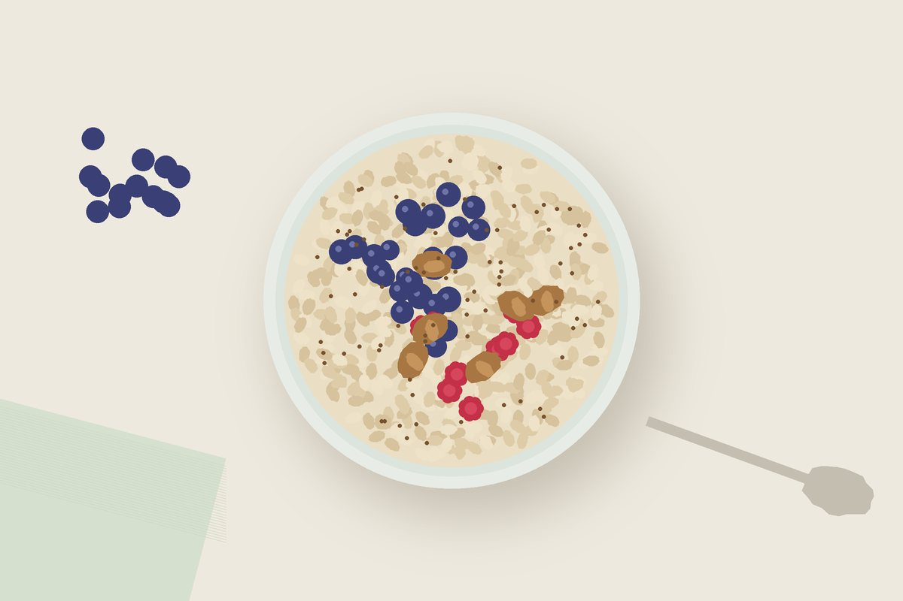
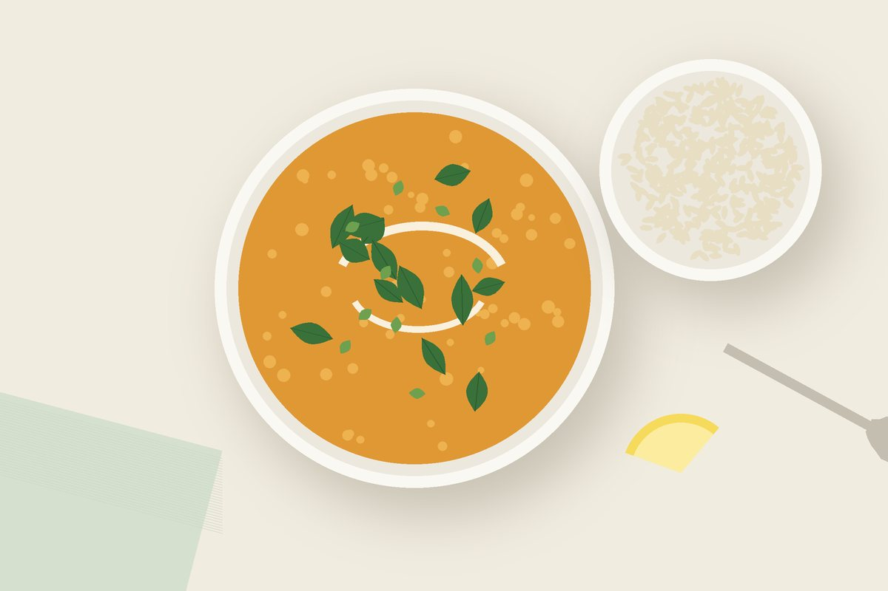
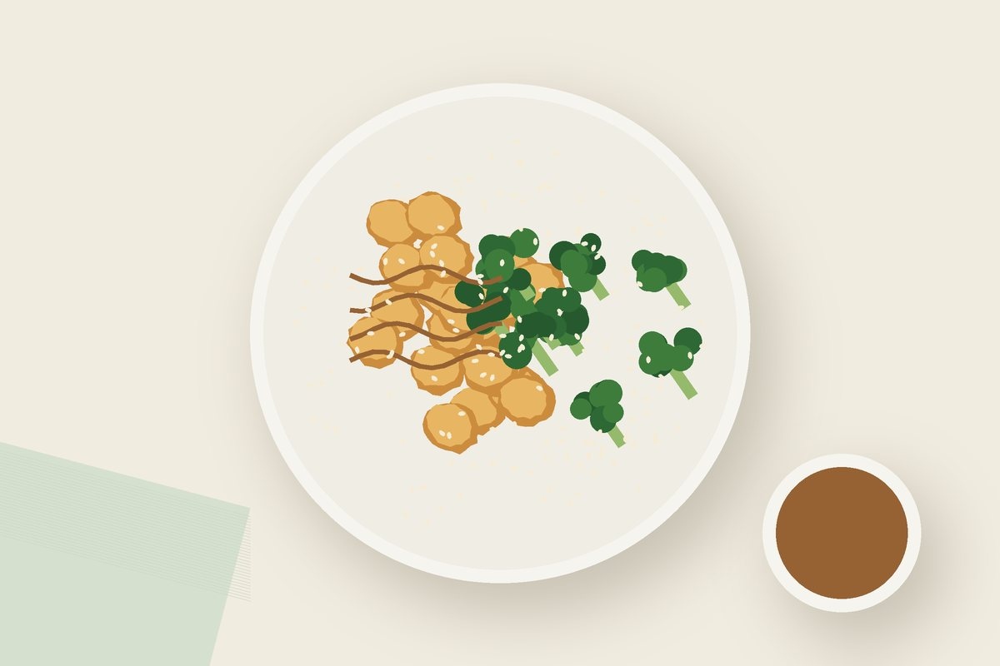

Alle Rezepte
Illustration
Frühstück
Overnight Oats mit Beeren und Leinsamen
Ein Frühstück, das sich über Nacht von selbst macht: Haferflocken mit Sojajoghurt, Leinsamen, Beeren und Walnüssen.
- Vorbereitung5 Min.
- Gesamtüber Nacht
- Portionen1
- Protein pro Portionca. 20 g

Zutaten
für 1 Portion
- 50 g Haferflocken
- 1 EL geschrotete Leinsamen
- 150 ml Sojadrink
- 100 g Sojajoghurt natur
- 1 Prise Zimt
- 100 g Beeren (frisch oder tiefgekühlt)
- 1 EL Walnüsse
- 1 TL Ahornsirup (nach Belieben)
Zubereitung
- Haferflocken, Leinsamen und Zimt in einem Glas oder einer Schüssel mischen. Sojadrink und Sojajoghurt dazugeben und gut verrühren.
- Die Beeren darauf verteilen. Tiefgekühlte Beeren tauen über Nacht auf und geben ihren Saft ab.
- Abgedeckt über Nacht, mindestens aber 4 Stunden, in den Kühlschrank stellen.
- Am Morgen mit gehackten Walnüssen und nach Belieben Ahornsirup servieren.
Die Proteinangabe ist grob aus Durchschnittswerten der Zutaten geschätzt. Wie viel Protein du am Tag brauchst, zeigt dir der Protein-Rechner.
Tipps
- Wähle einen Sojadrink mit zugesetztem Calcium. So deckst du gleich einen Teil deines Tagesbedarfs.
- Leinsamen und Walnüsse liefern die pflanzliche Omega-3-Fettsäure Alpha-Linolensäure.
Mehr Rezepte
Hauptgericht
Gefüllte Süßkartoffeln mit Linsen-Paprika-Füllung
Ofen-Süßkartoffeln mit würziger Füllung aus Linsen, Paprika und Mais, dazu ein frischer Joghurt-Dip und geröstete Sonnenblumenkerne.

Hauptgericht
Cremiges Rote-Linsen-Dal mit Spinat
Ein wärmendes Dal mit roten Linsen, Tomaten, Kokosmilch und frischem Spinat – schnell gekocht, sättigend und ideal zum Vorkochen.

Hauptgericht
Knuspriger Ofentofu mit Brokkoli und Erdnusssoße
Goldbraune Tofuwürfel und Brokkoli vom Blech mit einer cremigen Erdnuss-Limetten-Soße – wenig Aufwand, viel Protein.